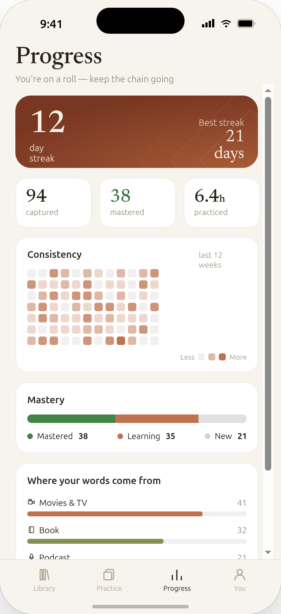
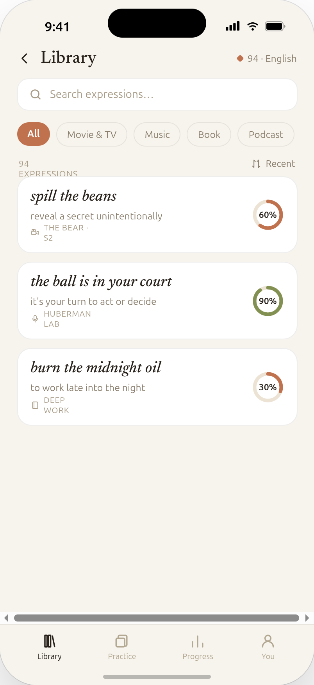
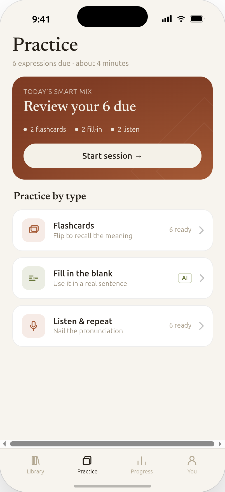
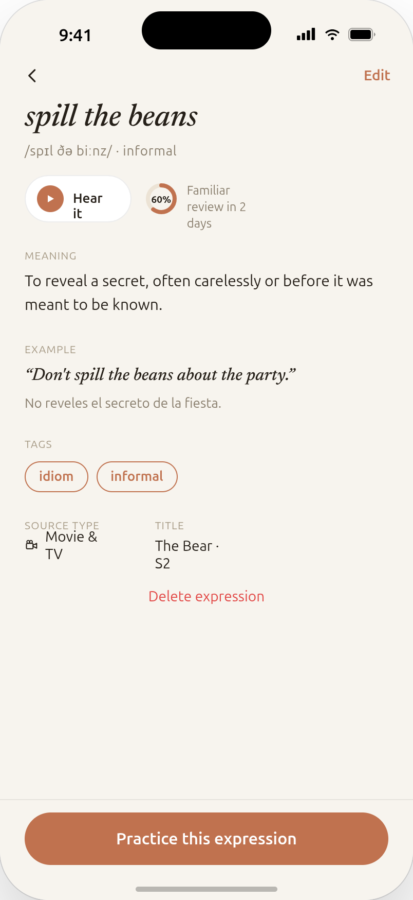
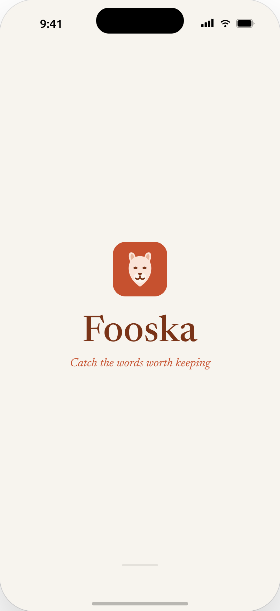

Catch the words
worth keeping.
Fooska turns the expressions you hear in movies, podcasts and real conversations into vocabulary you'll actually remember — captured in seconds, drilled by smart spaced practice.
Three taps from hearing it to owning it.
1 · Capture
Hear a phrase you love? Tap record or type it in — before it slips away. Fooska grabs it in seconds.
2 · Understand
AI instantly fills in the meaning, a natural example sentence, and pronunciation — no dictionary hunting.
3 · Remember
Smart spaced practice resurfaces each expression right before you'd forget it — so it sticks for good.
Watch it compound.
Streaks, a consistency heatmap, and a mastery breakdown turn steady effort into something you can see growing.

Your personal phrasebook.
Every expression you've caught, searchable and sorted — each with its own mastery score, meaning, and where it came from.

Every screen, calm and considered.



Good to know.
{{ item.q }} +
{{ item.a }}